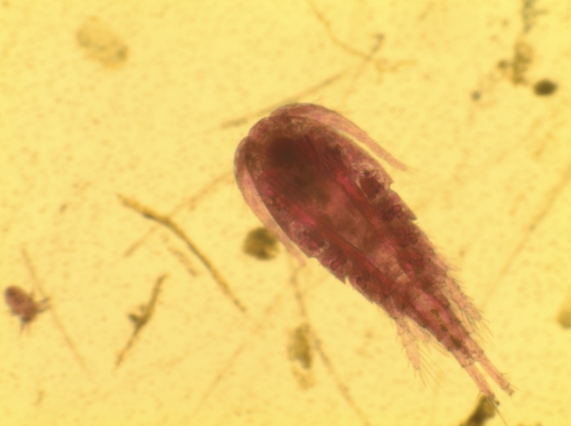
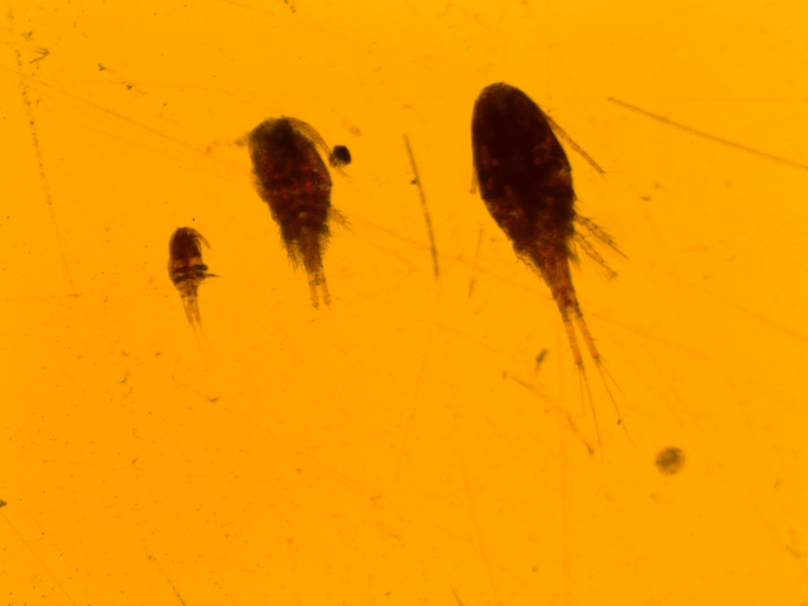
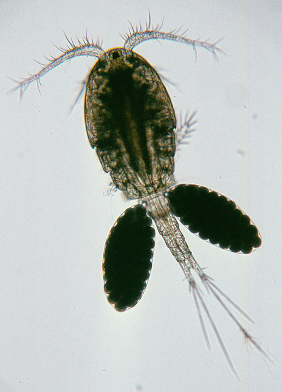

Cyclopoid copepod
Short, segmented prosome with legs attached
Short antennae
Tear shaped body
Shorter urosome/ rami split higher up than Limno
Typically larger than Limno, copepodite acantho usually the size of adult limno
Female has two egg sacs


